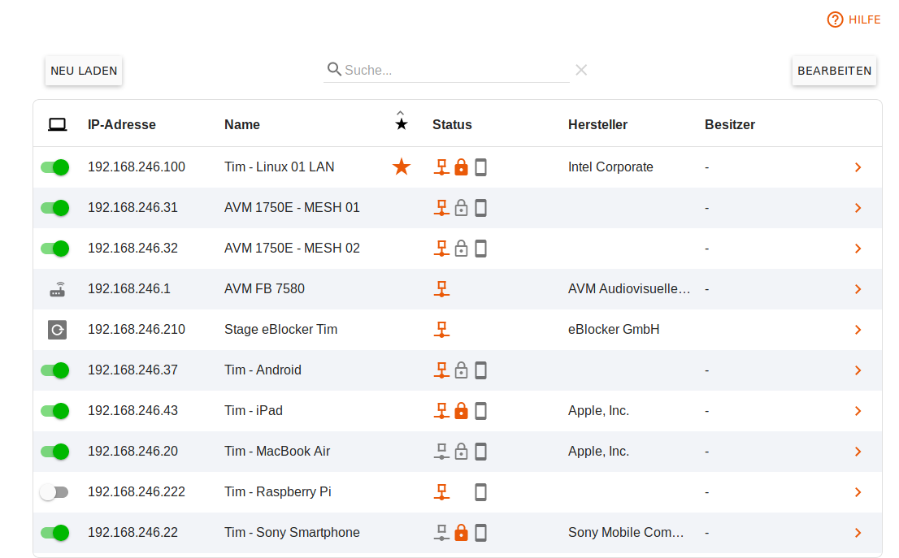
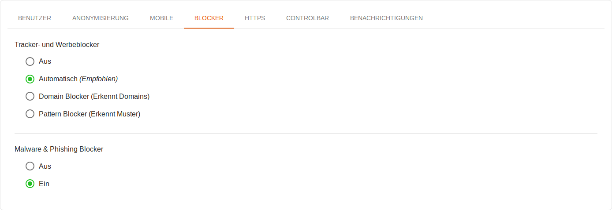
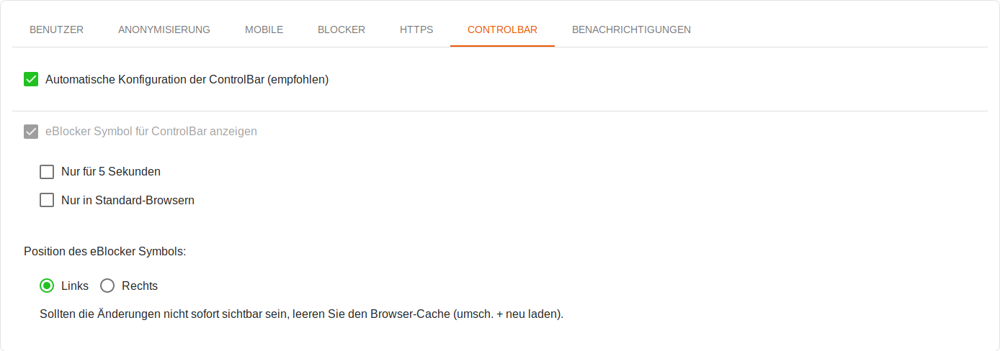
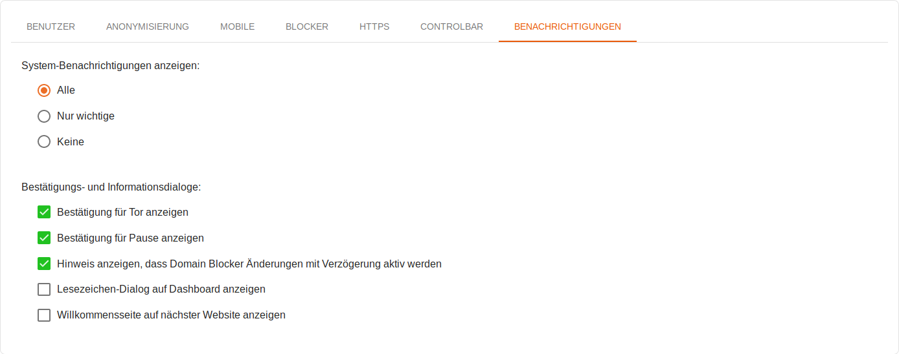

eBlocker Hilfe > Wissensdatenbank > eBlocker Menü
eBlocker Base ✓ / eBlocker Pro ✓ / eBlocker Family ✓
Diese Seite ist weiter unterteilt in die folgenden Abschnitte:
Die Funktion Geräte zeigt Ihnen die Liste aller Netzwerkgeräte an, die der eBlocker in Ihrem Heimnetzwerk erkannt hat.

Die Geräte werden zunächst durch ihre IP-Adresse und – soweit der eBlocker das ermitteln kann – durch den Hersteller identifiziert. Durch einen Klick auf die IP-Adresse können Sie weitere Details zu dem Gerät öffnen und einige Einstellungen vornehmen.
Sie können in der Übersicht den eBlocker für alle Geräte, bis auf Ihren Router und Ihrem eBlocker, einfach deaktivieren, oder aktivieren, indem Sie den Schalter vor der betreffenden IP-Adresse umstellen.
Für Ihren Router und Ihren eBlocker können Sie einen optionalen Namen vergeben, jedoch keine weiteren Einstellungen vornehmen.
Symbole bei der IP Adresse:
Symbole beim Status:
Ein Klick auf den Button Neu laden lädt die Geräteliste erneut.
Mit einem Klick auf den Button Bearbeiten können Sie einzelne, oder mehrere, Geräte aus der Geräteliste auswählen und diese dann aus der Geräteliste löschen.
Wenn Sie auf einen Eintrag in der Geräteliste klicken, werden die Gerätedetails für dieses Gerät angezeigt.
Gerätedetails
Wir empfehlen für alle Geräte einmalig einen Gerätenamen zu vergeben, damit Sie die Geräte jederzeit leicht wiedererkennen können (z.B.: „Christians Laptop“, „Fernseher Wohnzimmer“ oder „Sabines Smartphone“).
Hier werden Ihnen zusätzlich auch die IP Adresse, die Hardware Adresse (MAC) und gegebenenfalls der Hersteller pro Gerät angezeigt.
eBlocker aktivieren
In der Grundeinstellung ist der eBlocker für die meisten Geräte automatisch aktiviert.

Sie können jederzeit für jedes Gerät individuell festlegen, ob es vom eBlocker überwacht werden soll oder nicht und ob der eBlocker für dieses Gerät in der Pause ist. Falls der eBlocker für das Gerät aktiviert wurde, stehen im Folgenden weiteren Funktionen zur Verfügung.
Gerät zurücksetzen
Hier können Sie ein Gerät auf die Gerätegrundeinstellung des eBlockers zurücksetzen.

Weitere Funktion - Benutzer
eBlocker Family Kunden können hier bestimmen, ob das Gerät zu einem bestimmten Benutzer zugeordnet werden soll.
Weitere Funktion - Anonymisierung
Aktivieren Sie die IP-Anonymisierung und bestimmen Sie ob Sie eine Tor- oder VPN-Verbindung benutzen möchten.

Zusätzlich können Sie hier die Tarnung für ein Gerät bestimmen. Diese Funktion steht nur den eBlocker Pro und Family Kunden zur Verfügung, da man für die Gerätetarnung die HTTPS Funktion des eBlockers aktivieren muss. Öffnen Sie dazu die Auswahl und wählen Sie einen der vordefinierten Tarnungen (User Agenten) aus oder geben Sie einen eigenen User Agenten ein.
Weitere Funktion - Mobile
Hier können Sie - sofern die eBlocker Mobile Funktion aktiviert wurde - den Zugriff auf Ihren eBlocker für dieses Gerät von außerhalb Ihres Netzwerkes aktivieren.

Sie können bestimmen, ob dieses Gerät nur für den Internetzugriff aktiviert ist, oder ob man von dem Gerät aus von außerhalb Ihres Netzwerkes auf andere Geräte in Ihrem lokalen Netzwerk zugreifen kann.
Weitere Funktion - Blocker
Diese Funktion steht nur eBlocker Pro und Family Kunden zur Verfügung. Hier können Sie bestimmen, ob der eBlocker Tracker und trackende Werbung blockieren soll, ob der eBlocker seinen Domain Blocker, oder ob der eBlocker seinen Pattern Blocker benutzen soll. Die Einstellung Pattern Blocker setzt die Aktivierung von der HTTPS Funktion vor aus.

Wenn Sie die Einstellung auf Automatisch setzen, wird der eBlocker anhand der HTTPS Funktion (aktiviert oder deaktiviert) für Sie entscheiden, ob der Domain, oder Pattern Blocker benutzt wird. Wir empfehlen die Einstellung Automatisch zu verwenden.
Zudem können Sie hier den Malware & Phishing Schutz des Ihres eBlockers aktivieren.
Weitere Funktion - HTTPS
Diese Funktion steht nur eBlocker Pro und Family Kunden zur Verfügung. Sie können hier, wenn die HTTPS-Funktionalität auf dem eBlocker grundsätzlich aktiviert wurde, den eBlocker für jedes Gerät einzeln beauftragen, auch verschlüsselte Verbindungen (HTTPS) zu überwachen.

Zudem können Sie hier für jedes Gerät die HTTPS-Fehleranalyse aktivieren, um später bei Verbindungsproblemen von zum Beispiel Apps schneller die vom eBlocker unterdrückte Serververbindung zu finden.
Weitere Funktion - Controlbar
Legen Sie hier fest, ob das eBlocker Symbol auf dem Gerät immer, nie oder nur für fünf Sekunden angezeigt werden soll, sobald Sie eine neue Webseite aufrufen.

Wichtig: eBlocker Base Kunden werden das eBlocker Icon nur auf HTTP Seiten sehen können.
Zusätzlich gibt es die Option, das eBlocker Symbol nur in Standard-Browsern wie Microsoft Edge, Firefox, Chrome, oder Safari einzublenden. Dies umfasst auch Browser welche auf Chrome oder Firefox basieren. Das eBlocker Symbol wird dann beispielsweise nicht in Apps angezeigt.
Außerdem können Sie hier die Position des eBlocker Symbols festlegen.
Weitere Funktion - Benachrichtigungen
Hier können Sie pro Gerät bestimmen, ob alle, die wichtigsten oder keine Systemnachrichten vom eBlocker angezeigt werden sollen.

Als Standard Einstellung für alle Geräte, werden alle Systemnachrichten vom eBlocker angezeigt.
Sie können hier zudem individuell für jedes Gerät bestimmen welche Bestätigungs- und Informationsdialoge angezeigt werden sollen.
Automatische Suche nach neuen Geräten
Der eBlocker erkennt neue Geräte in Ihrem lokalen Netzwerk i.d.R. nach kurzer Zeit automatisch und zeigt diese auf der Seite Geräte an.
Sie können hier festlegen, ob der eBlocker nun alle 10 Sekunden, alle 5 Minuten, einmal pro Stunde, oder nie nach neuen Geräten suchen soll. Sollten Sie die Option Nie auswählen, dann beachten Sie bitte, dass Sie immer manuell nach neuen Geräten suchen müssen.
Manuelle Suche nach neuen Geräten
Mit einem Klick auf die Schaltfläche Neue Geräte suchen, können Sie jederzeit manuell nach neuen Geräten suchen.